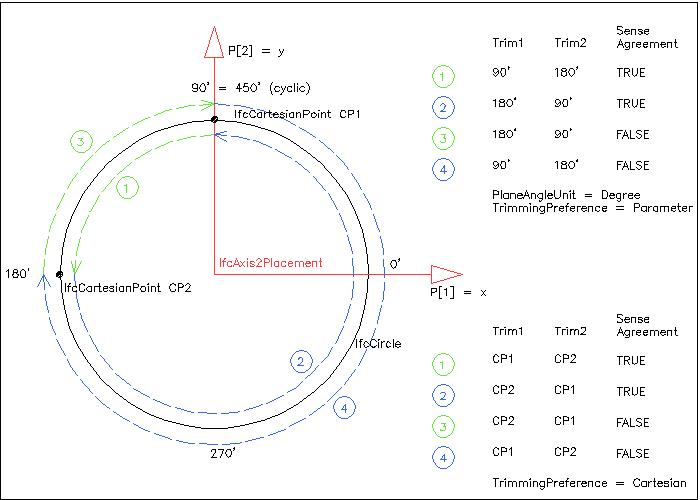

EXPRESS-G diagram
EXPRESS-G diagram| Courbe de rognage | |
| Begrenzte Kurve |
An IfcTrimmedCurve is a bounded curve that is trimmed at both ends. The trimming points may be provided by a Cartesian point or by a parameter value, based on the parameterization of the BasisCurve. The SenseAgreement attribute indicates whether the direction of the IfcTrimmedCurve agrees with or is opposed to the direction of the BasisCurve.
NOTE In case of the BasisCurve being a closed curve, such as an IfcCircle or IfcEllipse, the SenseAgreement affects the geometric shape of the IfcTrimmedCurve.
 |
Figure 324 — Trimmed curve parameterization |
Figure 324 shows the four arcs (dashed blue and green lines with arrow showing different orientations) that can be defined by the same BasisCurve (of type IfcCircle) and the same trimming points (given by Cartesian points and parameter values) by using different assignments to Trim1 and Trim2 and SenseAgreement.
NOTE Since the BasisCurve is closed (type IfcCircle), the exception of the informal proposition IP3 applies, i.e. the sense flag is not required to be consistent with the parameter values of Trim1 and Trim1, so the rule (sense = parameter 1 < parameter 2) may not be fulfilled.
NOTE Definition according to ISO/CD 10303-42:1992
A trimmed curve is a bounded curve which is created by taking a selected portion, between two identified points, of the associated basis curve. The basis curve itself is unaltered and more than one trimmed curve may reference the same basis curve. Trimming points for the curve may be identified by:
- parametric value
- geometric position
- both of the above
At least one of these shall be specified at each end of the curve. The SenseAgreement makes it possible to unambiguously define any segment of a closed curve such as a circle. The combinations of sense and ordered end points make it possible to define four distinct directed segments connecting two different points on a circle or other closed curve. For this purpose cyclic properties of the parameter range are assumed; for example, 370 degrees is equivalent to 10 degrees.
The IfcTrimmedCurve has a parameterization which is inherited from the particular basis curve reference. More precisely the parameter s of the trimmed curve is derived from the parameter of the basis curve as follows:
- if SenseAgreement is TRUE: s = t - t1
- if SenseAgreement is FALSE: s = t2 - t
In the above equations t1 is the value given by Trim1 or the parameter value corresponding to point 1 and t2 is the value given by Trim2 or the parameter value corresponding to point 2. The resultant IfcTrimmedCurve has a parameter ranging from 0 at the first trimming point to |t2 - t1| at the second trimming point.
NOTE In case of a closed curve, it may be necessary to increment t1 or t2 by the parametric length for consistency with the sense flag.
NOTE Entity adapted from trimmed_curve defined in ISO 10303-42
HISTORY New entity in IFC1.0
Informal Propositions:
XSD Specification:
<xs:element name="IfcTrimmedCurve" type="ifc:IfcTrimmedCurve" substitutionGroup="ifc:IfcBoundedCurve" nillable="true"/>EXPRESS Specification:
| ENTITY IfcTrimmedCurve |
| SUBTYPE OF IfcBoundedCurve; |
|
| WHERE |
|
| END_ENTITY; |
Attribute Definitions:
| BasisCurve | : | The curve to be trimmed. For curves with multiple representations any parameter values given as Trim1 or Trim2 refer to the master representation of the BasisCurve only. |
| Trim1 | : | The first trimming point which may be specified as a Cartesian point, as a real parameter or both. |
| Trim2 | : | The second trimming point which may be specified as a Cartesian point, as a real parameter or both. |
| SenseAgreement | : | Flag to indicate whether the direction of the trimmed curve agrees with or is opposed to the direction of the basis curve. |
| MasterRepresentation | : | Where both parameter and point are present at either end of the curve this indicates the preferred form. |
Formal Propositions:
| Trim1ValuesConsistent | : | Either a single value is specified for Trim1, or the two trimming values are of different type (point and parameter) |
| Trim2ValuesConsistent | : | Either a single value is specified for Trim2, or the two trimming values are of different type (point and parameter) |
| NoTrimOfBoundedCurves | : | Already bounded curves shall not be trimmed. |
Inheritance Graph:
| ENTITY IfcTrimmedCurve |
| ENTITY IfcRepresentationItem |
| INVERSE |
|
| ENTITY IfcGeometricRepresentationItem |
| ENTITY IfcCurve |
| DERIVE |
|
| ENTITY IfcBoundedCurve |
| ENTITY IfcTrimmedCurve |
|
| END_ENTITY; |
 Link to this page
Link to this page